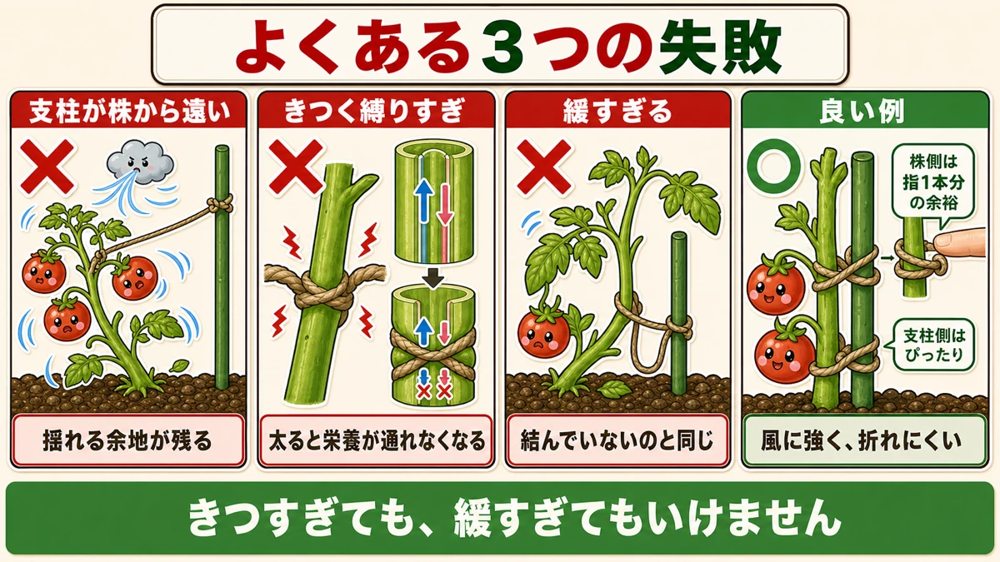
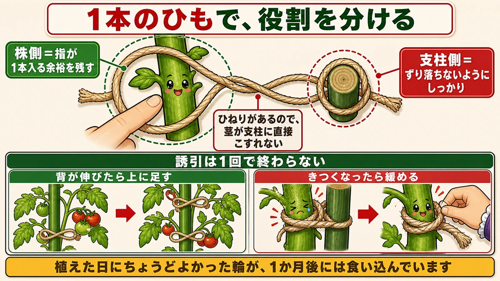
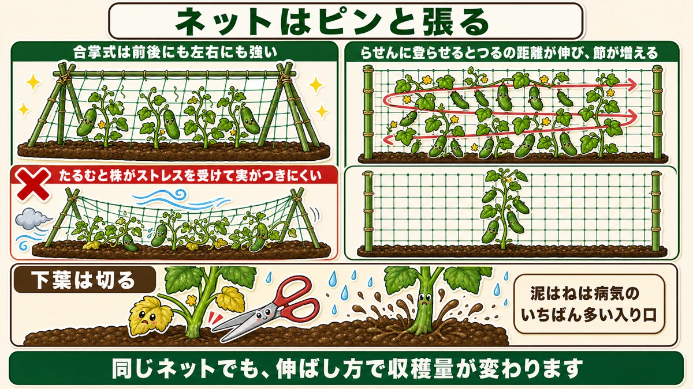
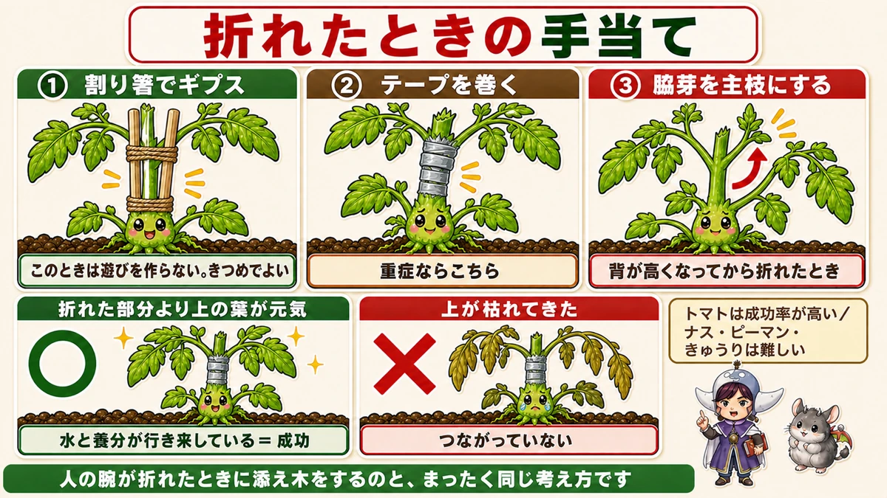

Loose at the stem, tight at the cane 🌿 The one rule that decides whether ties help or strangle

🌿 "You just tie it to the cane, don't you?"
🌿 "The wind snapped my tomato."
🌿 "The cucumbers flower but nothing sets."
Hello, I'm Eiko. Eight years of growing vegetables organically and without pesticides, and a teaching licence in science.
Tying a plant to its support looks trivial. It isn't — this is where gardens diverge.
The whole article in one line:
Loose at the stem, tight at the cane.
Three common mistakes

What this diagram says （図解の文字）
- Three common mistakes
- The cane is too far from the plant ✗ "room to swing is left"
- Tied too tight ✗ "as it thickens, nutrients can't get past"
- Too loose ✗ "the same as not tying it"
- ○ Good — "a finger's width of slack at the stem", "snug at the cane", "stands up to wind, doesn't snap"
① The cane is too far from the plant
You think you put the cane beside the plant, and it's 10 or 15 cm away. Then a long piece of string bridges the gap.
The plant can still swing. The point of tying in is to stop the wind rocking the plant, and a long string lets it move like a pendulum. A distant cane leaves the movement in place.
Run the cane right beside the plant.
② Tied too tight — the one everyone misses
You want it firmly held, so you pull it tight. On planting day that's fine.
But stems thicken. A month later that stem is nearly twice as thick, and the loop hasn't changed.
The stem is constricted, and nothing can move up or down past the tie.
Inside a stem run the vessels that carry water up and the ones that carry sugars down from the leaves. Squeeze from outside and both stop. You get a plant that's healthy above the tie and thin below it.
③ Too loose
Over-cautious ties fail the other way. String and cane stop meaning anything — in wind it's no different from being untied.
The answer: loose at the stem, tight at the cane

What this diagram says （図解の文字）
- One string, two different jobs
- "Stem side = leave a finger's width of room"
- "The twist stops the stem rubbing directly on the cane"
- "Cane side = firm, so it can't slide down"
- "Tying in isn't a one-off" — "add one higher as it grows", "loosen it when it gets tight"
A good tie looks like this:
- The cane runs right beside the plant
- The string spans a short distance
- There's a little play on the stem side
- The cane side is held firm
One string, with a different job at each end:
- Stem side — room for a finger, so thickening does no harm
- Cane side — tight, so it can't slide down
The figure-of-eight
This is sometimes called a figure-of-eight tie: twist the string once between cane and stem so it makes two loops you can size independently. Large loop on the stem, small loop on the cane. The twist also stops the stem rubbing against the cane.
Don't bother memorising the name. If it's loose at the stem and tight at the cane, the knot doesn't matter.
Tying in is not a one-off job
It isn't finished on planting day. The plant grows, and growth needs new ties higher up.
- Add one above as it gets taller
- Loosen any that have become tight
The second one especially. Go back and check the ties you made earlier — a loop that was perfect on planting day can be cutting in a month later.
Late tying costs you cucumbers
On a climbing crop, late tying shows up directly in the harvest.
① Lifting it later breaks it
Leave a vine to sprawl and then try to thread it into the net: the lifting force snaps leaves and stem.
② The vines tangle
Left to themselves they wind around each other. Airflow stops, and disease follows.
③ Pollination fails
This one surprised me. When the vines are tangled near the ground, humidity there is high — and pollen doesn't fly. Bees and hoverflies come, but the pollen doesn't stick to them.
In damp air even self-pollination struggles, and nothing sets.
So "it flowers but nothing forms" can be nothing more than late tying-in.
Netting

What this diagram says （図解の文字）
- Pull the net taut
- "An A-frame is strong front-to-back and side-to-side"
- ✗ "a slack net stresses the plant and fruit sets poorly"
- "Training in a spiral lengthens the vine's path, so there are more nodes"
- "Cut the lower leaves" — "soil splash is the commonest way disease gets in"
- "Same net, different training, different yield"
Pull it taut
The only trick with netting. A slack net gets caught by the wind, and since the vines are woven through it, the whole plant is rocked continuously. A stressed plant is said to set fruit poorly.
Getting it taut feels fiddly the first time. Whether you take care over it decides your summer harvest.
An A-frame is the easiest structure
Canes pushed in at an angle from both sides of the bed, crossed at the top, with a horizontal cane along the crossing — like a tent frame.
It resists force from every direction. Canes pushed in vertically are weak in a crosswind.
Train it in a spiral and you pick more
Decide in advance which way the vine goes:
- Train the growing tip to the right
- At the end of the net, turn it back to the left
- Repeat, so it climbs in a spiral
Why? The vine travels further than it would going straight up. Cucumbers fruit at the nodes, so more distance = more nodes = more cucumbers.
Same net, different yield, purely from how you train it.
Cut the lower leaves
A job that goes with tying in. Remove the lowest leaves, for two reasons:
- They die back from the bottom, and dead leaves start disease
- They've finished their job anyway — the young upper leaves do the photosynthesis; the old shaded ones barely work
And cutting them opens a gap between soil and foliage, so rain splash doesn't reach the leaves. Soil splash is the commonest way disease gets in.
When it snaps anyway

What this diagram says （図解の文字）
- First aid for a break
- ① A splint of two chopsticks — "no play this time; firm is right"
- ② Wrap it with tape — "for a bad break"
- ③ Make a side shoot the new main stem — "when it breaks after some height"
- "Leaves above the break still healthy" ○ "water and nutrients are moving through"
However careful you are, strong wind breaks things.
Tomatoes repair well. Aubergines, peppers and cucumbers, honestly, mostly don't — try anyway, but don't count on it.
Method 1: a splint
For a partial break:
- Stand two chopsticks either side of the break
- Keep them close together so the stem is held straight
- Tie firmly with twine above the break
Exactly the same idea as splinting a broken arm.
And note: this is the one case where you don't leave play. Firm is correct. The purposes differ — tying in leaves room to thicken; a splint holds still until it knits.
Method 2: tape
For a clean break, wrap garden tape or electrical tape directly around it. Two or three turns is fine if it feels weak.
How to tell whether it worked
- Leaves above the break still healthy after a few days → it worked; water and nutrients are moving
- The top starts dying back → it hasn't joined
Giving up is also a decision. If the plant is young and short, replanting is often quicker.
On a tall plant, use a side shoot
Another option: let a side shoot below the break grow on as the new main stem. Tomatoes throw side shoots constantly, so losing the top doesn't mean losing the plant. On a well-grown plant this is often the surer route.
You'll also break them yourself
One last thing. It's easy to snap the main stem while removing side shoots on a tomato. I've done it more than once — hand slips, and there's the sound.
Knowing the repair makes that moment much less bleak.
To sum up
- ✅ Loose at the stem, tight at the cane
- ✅ A distant cane leaves room to swing
- ✅ Too tight and the thickening stem is constricted, so nothing moves up or down
- ✅ Too loose is the same as untied
- ✅ A finger's width at the stem; firm at the cane
- ✅ A figure-of-eight gives you two loops of different sizes
- ✅ Tying in is ongoing — add higher, loosen the old ones
- ✅ Late tying on cucumbers: breakage, tangling, and failed pollination in the damp
- ✅ Pull the net taut. A slack net stresses the plant
- ✅ A-frames resist wind from every direction
- ✅ Spiral training adds nodes, and nodes are fruit
- ✅ Cut lower leaves — finished anyway, and soil splash is the main route in
- ✅ Breaks: splint (firm, no play) or tape; healthy leaves above = success
- ✅ On a tall plant, promote a side shoot
You don't have to do all of it. Go and put a finger into one of the ties you made earlier. If it won't fit, it's time to redo it 🌿
Thank you for reading!